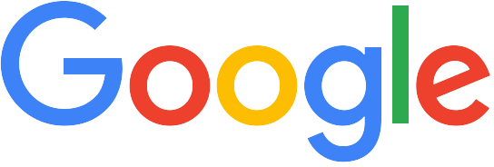

-

Ten things we know to be true
We first wrote these "10 things" when Google was just a few years old. From time to time we revisit this list to see if it still holds true. We hope it does—and you can hold us to that. New tweak to the look of the homepage, we take great care to ensure that they will ultimately serve you, rather than our own internal goal or bottom line.
Focus on the user and all else will follow.
Since the beginning, we’ve focused on providing the best user experience possible. Whether we’re designing a new Internet browser or a new tweak to the look of the homepage, we take great care to ensure that they will ultimately serve you, rather than our own internal goal or bottom line. Our homepage interface is clear and simple, and pages load instantly. Placement in search results is never sold to anyone, and advertising is not only clearly marked as such, it offers relevant content and is not distracting. And when we build new tools and applications, we believe they should work so well you don’t have to consider how they might have been designed differently.
It’s best to do one thing really, really well.
We do search. With one of the world’s largest research groups focused exclusively on solving search problems, we know what we do well, and how we could do it better. Through continued iteration on difficult problems, we’ve been able to solve complex issues and provide continuous improvements to a service that already makes finding information a fast and seamless experience for millions of people. Our dedication to improving search helps us apply what we’ve learned to new products, like Gmail and Google Maps. Our hope is to bring the power of search to previously unexplored areas, and to help people access and use even more of the ever-expanding information in their lives.
Fast is better than slow.
We know your time is valuable, so when you’re seeking an answer on the web you want it right away–and we aim to please. We may be the only people in the world who can say our goal is to have people leave our website as quickly as possible. By shaving excess bits and bytes from our pages and increasing the efficiency of our serving environment, we’ve broken our own speed records many times over, so that the average response time on a search result is a fraction of a second. We keep speed in mind with each new product we release, whether it’s a mobile application or Google Chrome, a browser designed to be fast enough for the modern web. And we continue to work on making it all go even faster.
Democracy on the web works.
Google search works because it relies on the millions of individuals posting links on websitesto help determine which other sites offer content of value. We assess the importance of every web page using more than 200 signals and a variety of techniques, including our patented PageRank™ algorithm, which analyzes which sites have been “voted” to be the bestsources of information by other pages across the web. As the web gets bigger, this approach actually improves, as each new site is another point of information and another vote to be counted. In the same vein, we are active in open source software development, where innovation takes place through the collective effort of many programmers.
You don’t need to be at your desk to need an answer.
The world is increasingly mobile: people want access to information wherever they are, whenever they need it. We’re pioneering new technologies and offering new solutions for mobile services that help people all over the globe to do any number of tasks on their phone, from checking email and calendar events to watching videos, not to mention the several different ways to access Google search on a phone. In addition, we’re hoping to fuel greater innovation for mobile users everywhere with Android, a free, open source mobile platform. Android brings the openness that shaped the Internet to the mobile world. Not only does Android benefit consumers, who have more choice and innovative new mobile experiences, but it opens up revenue opportunities for carriers, manufacturers and developers.
You can make money without doing evil.
Google is a business. The revenue we generate is derived from offering search technology to companies and from the sale of advertising displayed on our site and on other sites across the web. Hundreds of thousands of advertisers worldwide use AdWords to promote their products; hundreds of thousands of publishers take advantage of our AdSense program to deliver ads relevant to their site content. To ensure that we’re ultimately serving all our users (whether they are advertisers or not), we have a set of guiding principles for our advertising programs and practices:
We don’t allow ads to be displayed on our results pages unless they are relevant where they are shown. And we firmly believe that ads can provide useful information if, and only if, they are relevant to what you wish to find–so it’s possible that certain searches won’t lead to any ads at all.
We believe that advertising can be effective without being flashy. We don’t accept pop–up advertising, which interferes with your ability to see the content you’ve requested. We’ve found that text ads that are relevant to the person reading them draw much higher clickthrough rates than ads appearing randomly. Any advertiser, whether small or large, can take advantage of this highly targeted medium.
Advertising on Google is always clearly identified as a “Sponsored Link,” so it does not compromise the integrity of our search results. We never manipulate rankings to put our partners higher in our search resultsand no one can buy better PageRank. Our users trust our objectivity and no short-term gain could ever justify breaching that trust.
-
Our Mission “Bayer: Science For A Better Life”
Bayer is a world-class innovation company with a 150-year history. Our scientific successes are intended to help improve people’s lives. At the same time, our innovations form the basis for sustainable and profitable business activity and are the key to maintaining or achieving leadership positions in all of our markets.
Our products are helping to address some of today’s biggest challenges, including global population growth, an aging society and the need to make efficient – and, wherever possible, sustainable – use of natural resources.
We are improving people’s quality of life by preventing, alleviating or curing diseases.
We are helping to provide an adequate supply of high-quality food, feed and renewable plant-based raw materials.
In line with our mission “Bayer: Science For A Better Life”, we aim to improve people’s quality of life. For this endeavor, we focus on our core competency of developing and successfully commercializing innovative products and solutions based on scientific knowledge.
Entire Focus on Life Science Businesses
Bayer is charting the course for its successful development as a Life Science company. From January 1, 2016, the company’s business will be managed by three divisions: Pharmaceuticals, Consumer Health and Crop Science. The present structure of a strategic management holding company and operational subgroups will be replaced by an integrated organization under the umbrella of the strong Bayer brand.
As part of the reorganization, the Bayer HealthCare subgroup will be dissolved. The Radiology business will be assigned to the Pharmaceuticals Division. Consumer Health will comprise the present Consumer Care Division. The Bayer CropScience subgroup will become the Crop Science Division. As a business unit, Animal Health will report directly to Liam Condon.
Our Values
We are committed to operating sustainably and addressing our social and ethical responsibilities as a corporate citizen. Bayer’s values play a central role in our daily work and are intended to guide us in fulfilling our mission. These values are represented by the word LIFE: Leadership, Integrity, Flexibility, Efficiency.
These values apply to everyone at Bayer and are firmly integrated into our global performance management system for managerial employees. Our value culture ensures a common identity within the enterprise across national boundaries, management hierarchies and cultural differences.